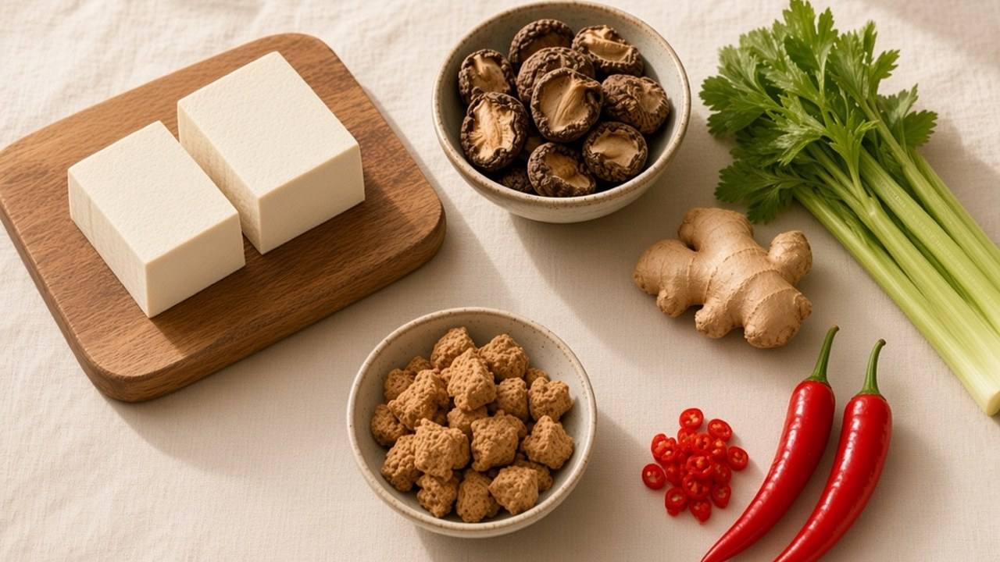
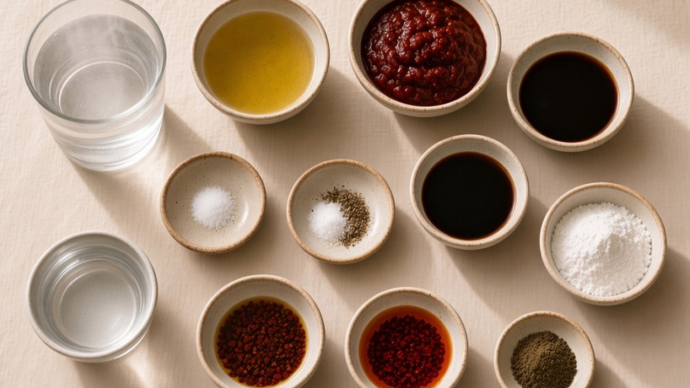
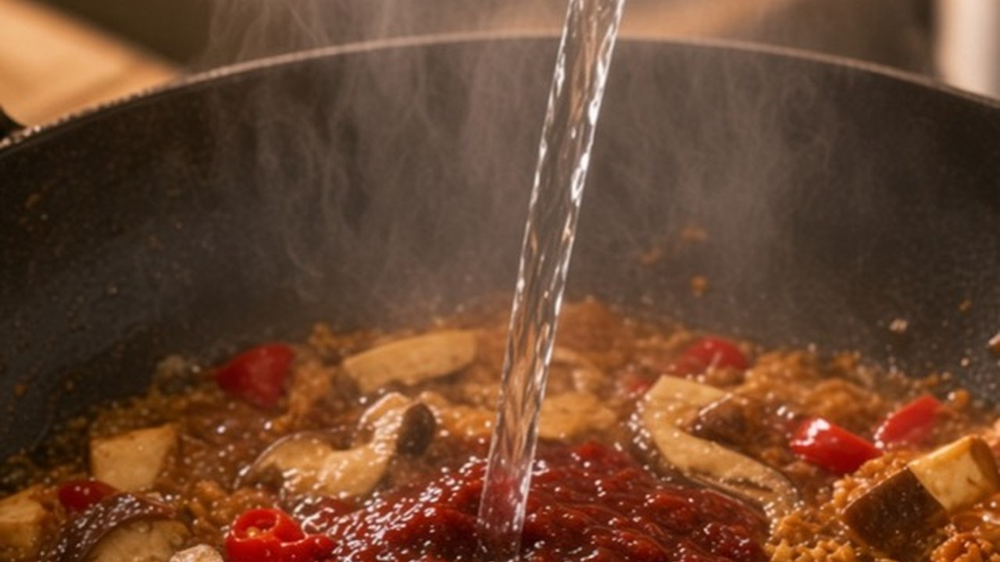
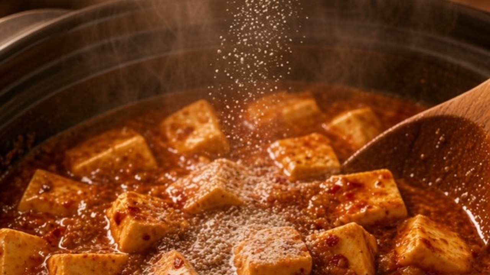
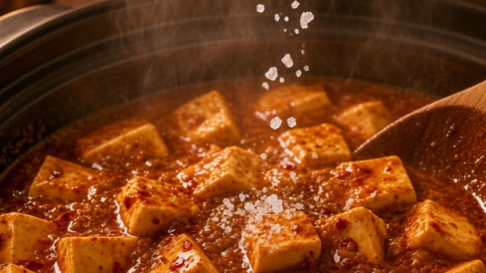
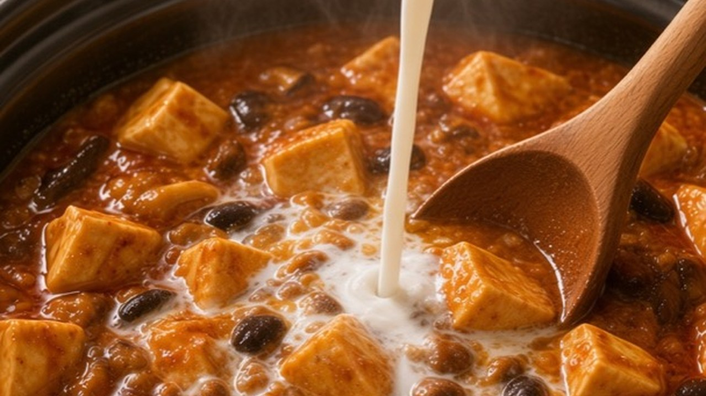

Meditation · Cooking Meditation
Mapo Tofu
Today we're making Mapo Tofu. Soft tofu, chili, and that quiet numbing heat. Nothing rushed.

The Ingredients
Here are the ingredients. Everything you need, with the amounts.

- Soft tofu400g
- Dried shiitake10g
- Soy protein32g
- Ginger10g
- Celery10g
- Red pepper45g

- Vegetable oil30g
- Bean paste30g
- Light soy sauce10g
- Dark soy sauce3g
- Boiling water250g
- Salt1.5g
- White pepper0.2g
- Cornstarch5g
- Cold water40g
- Sichuan pepper oil1.5g
- Chili oil2.5g
- Kelp powder1g
Five Steps
Here's the whole recipe. Five easy steps. Nothing rushed.
01 Prep
Step one. Soak the shiitake first. Ten grams, in warm water, until they go soft. Then cut into small cubes.

Do the same with the soy protein. Thirty-two grams. Just let it sit. Squeeze dry and cut small.

Now we cut. Cube four hundred grams of tofu. Mince the ginger. Chop the celery and the red pepper. Keep the celery aside until the end.

02 Blanch
Step two. Give the tofu a quick blanch in lightly salted water. One minute, then lift it out. This takes away the beany smell and helps the tofu hold its shape.

03 Stir-fry
Step three. Warm a little oil. Thirty grams is enough — a thin film, not a pool. Stir-fry the ginger, the shiitake, and the soy protein until they smell good.

A splash of light soy, ten grams. Then in goes the bean paste, thirty grams, and the red pepper. Stir until fragrant.

Then pour in the boiling water. About two hundred fifty grams. Pour slowly along the side of the pan.

04 Simmer
Step four. Slide the tofu in, gently. Don't stir hard — let it settle into the sauce.

A tiny pinch of white pepper. That's about 0.2 grams.

A little salt. One and a half grams. That's about it.

And just a splash of dark soy. Three grams is plenty. Let it simmer three minutes.

05 Finish
Step five. Mix a little cornstarch with cold water, and stir it in slowly, until it turns glossy. Don't pour it all at once.

Finish with a drizzle of Sichuan pepper oil, chili oil, and a pinch of kelp powder.

Sprinkle the celery. Numbing, fragrant, and warm.